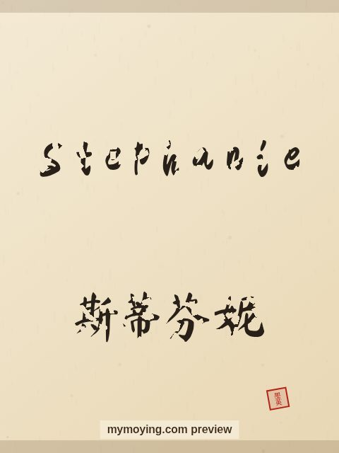

Stephanie in Chinese Calligraphy
Curious how Stephanie looks in Chinese brush calligraphy? This page shows the name, its Chinese transliteration 斯蒂芬妮 (Sī dì fēn nī), and the story behind it.

Sample. “Stephanie” in the Regular (楷书) brush style with the Chinese name 斯蒂芬妮 (Sī dì fēn nī). The paid file removes the watermark.
The Chinese characters for Stephanie
As a transliteration, Stephanie is usually written 斯蒂芬妮 (Sī dì fēn nī). Each character is listed below with its own dictionary meaning — the name is chosen by sound, not by meaning, and Moying does not translate names. Please have a person review the characters before any permanent use such as a tattoo.
Origin and meaning
With Greek origins, Stephanie is usually read as “crown (feminine of Stephen)”.
About the name Stephanie
The feminine of Stephen, popular in the 1970s and 1980s.
As a gift or a tattoo
If you are choosing a name for a print or a tattoo, Stephanie carries the meaning “crown (feminine of Stephen)” and looks striking in brush strokes.
Open Stephanie in the generatorFree watermarked preview. $1.99 once for a clean high-resolution download of this name in every style and setting. No subscription. Digital product, delivered instantly; see Terms.